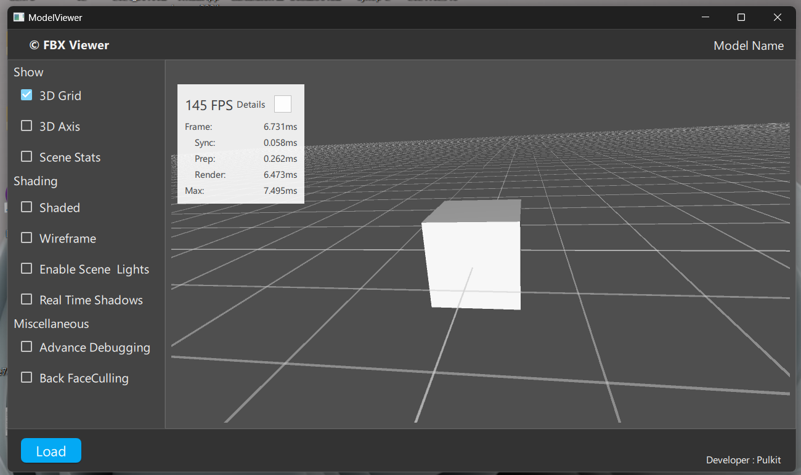

Qt6
Framework
QML
UI Layer
C++
Backend
3D
Real-time
Overview
A desktop 3D model inspection application built with Qt 6.7 and Qt Quick 3D. The architecture mirrors the professional C++ + scripting split used in game engines — QML handles the real-time 3D scene and UI layer while a C++ ModelManager class manages asset loading, state, and business logic. External models (FBX, OBJ, glTF) are converted into Qt's optimised .mesh format using Balsam.exe for fast runtime loading. Built with CMake following Qt project structure conventions across clean module directories.
Tech Stack
Qt 6.7
Qt Quick 3D
QML
C++ (ModelManager)
Balsam Asset Pipeline
FBX · OBJ · glTF
CMake
Git · GitHub
Key Features
QML + C++ Split Architecture
QML owns the 3D scene and interactive UI layer; C++ ModelManager handles all asset logic and state — the same separation of concerns as UE4's Blueprint + C++ workflow.
Multi-format Asset Pipeline
Balsam.exe converts FBX, OBJ, and glTF files into Qt's optimised .mesh format at build time, enabling fast runtime loading without re-parsing external formats.
Runtime Asset Swapping
Supports runtime asset swapping without restarting the application — models load and replace on the fly via the C++ backend.
Interactive Controls
Blueprint event graphs for user interaction: object rotation, zoom, real-time material switching, and cinematic camera fly-throughs via Qt animation timelines.
Screenshots
‹
Screenshot 1

Screenshot 2
Screenshot 3
›
View Source Code
github.com/PulkitPunea/3d-Model-Viewer